5040C24 air conditioner box - dismantle and rebuild at bench
- Path
- Procedures > 50 AUXILIARY UNITS > 5040 AIR CONDITIONING CASING AND COMPONENTS > 5040C air conditioner box and components > 5040C24 air conditioner box - dismantle and rebuild at bench
- Kind
- repair procedure (removal / refitting; the operation number is the code)
- Applies to
- all engines; all production periods
- Interactive page
- https://sloeber94.github.io/elrnDB-fDbl/en/#/2584837
Applies to: all engines; all production periods
1. Disconnect the electrical connectors (1a) and (1b) and the air conditioner controls lights (1c).
 | Name | Connector |
|---|---|---|
1a | Climate control controls |
| Name | Connector |
|---|---|---|
1b | Climate control fan control |
| Name | Connector |
|---|---|---|
1c | Air conditioning/heater controls light |
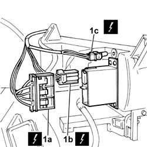
Applies to: all engines; all production periods
1. Disconnect the electrical connections for the fan resistor (1a), thermostat (1b) and interior compartment fan (1c).
2. Release the electrical wiring for the air conditioner case from the retaining bands and remove it.
| Name | Connector |
|---|---|---|
1a | Passenger compartment air fan adjustment resistor | See O30 PASSENGER COMPARTMENT AIR FAN ADJUSTMENT RESISTOR ( HEATER ) |
| Name | Connector |
|---|---|---|
1b | Electronic thermostat |
| Name | Connector |
|---|---|---|
1c | Passenger compartment ventilation fan |
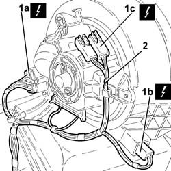
Applies to: all engines; all production periods
1. Undo the bolts (1a) and remove the access cover (1b) to the cleaning filter element.
2. Withdraw the filter element from the cleaning filter.
3. Undo bolts (3a) and remove fan motor electronic variable drive (3b).
4. Undo the bolts (4a) and remove the air conditioning fan (4b).
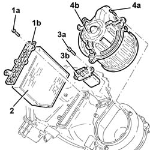
Applies to: all engines; all production periods
1. Release the transmission cable from the attachment (1a) and disconnect the flexible transmission cable (1b).
2. Undo the bolt (2a) and disconnect the air distribution transmission cable (2b).
3. Undo the bolt (3a) and disconnect the air mixer transmission cable (3b).
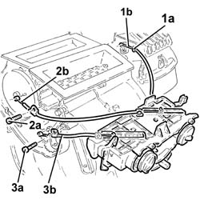
Applies to: all engines; all production periods
1. Undo the bolt (1a) and remove the bracket (1b) fixing the coolant supply and return pipes to the heater.
2. Undo bolts (2a) and take off air conditioner casing (2b) after undoing the clips.
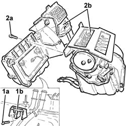
Applies to: all engines; all production periods
1. Undo bolts (1a) and remove external air intake (1b) after undoing the clips.
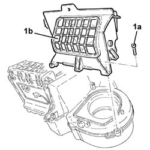
Applies to: all engines; all production periods
1. Undo bolt (1a), remove washer (1b) and linkage (1c).
2. Remove linkage (2a) and external air/recirculation port (2b).
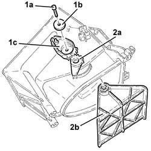
Applies to: all engines; all production periods
1. Undo bolts (1a) and separate casing halves (1b) after undoing the clips.
2. Release the elecrtronic thermostat from the evaporator.
3. Remove the evaporator unit.
4. Remove the protection.
5. Drill rivet (5a) and remove the control unit of electronic thermostat (5b) after withdrawing the electrical wiring.
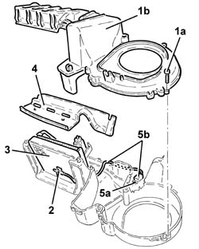
Applies to: all engines; all production periods
1. Undo the bolts (1a) and remove the heater guard (1b).
2. Remove heater (2a) complete with pipes (2b).
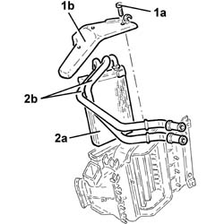
Applies to: all engines; all production periods
1. Undo bolts (1a) of collars (1b) and remove inlet and outlet pipes to heater (1c).
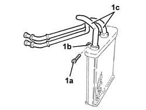
Applies to: all engines; all production periods
1. Undo bolts (1a) and separate casing halves (1b) after undoing the clips.
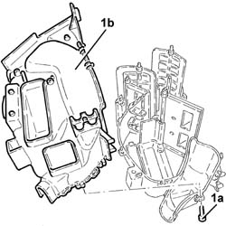
Applies to: all engines; all production periods
1. Undo bolt (1a), remove washer (1b) and linkage (1c).
2. Remove both linkages (2a) complete with connection rod (2b).
3. Remove the gear.
4. Undo bolt (4a), remove washer (4b) and plate controlling motion of ports (4c).
5. Undo bolt (5a) and remove linkage (5b).
6. Undo bolt (6a) complete with washer (6b).
7. Disconnect connection rod (7a) and remove complete with linkage (7b).
8. Undo bolt (8a) and remove washer (8b) and linkage (8c).
9. Undo bolt (9a) and remove linkage (9b).
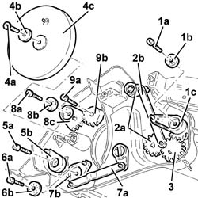
Applies to: all engines; all production periods
1. Remove air mixing port.
2. Remove footwell/half front ventilation port.
3. Remove front ventilation port.
4. Remove windscreen port.
5. Remove the square rod controlling the footwell ventilation ports.
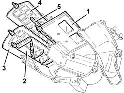
Applies to: all engines; all production periods
1. Refit the square rod controlling the footwell ventilation ports.
2. Refit the windscreen port.
3. Refit the front ventilation port.
4. Refit the footwell/half front ventilation port.
5. Refit the air mixing port.
Applies to: all engines; all production periods
1. Refit linkage (1a) and secure with bolt (1b).
2. Refit linkage (2a) and secure with bolt (2b) and washer (2c).
3. Refit and connect rod (3a) with linkage (3b).
4. Tighten bolt (4a) with washer (4b).
5. Refit linkage (5a) and secure with bolt (5b).
6. Refit plate controlling movement of ports (6a) and secure with washer (6b) and bolt (6c).
7. Refit the gear.
8. Refit linkage (8a) complete with connection rod (8b).
9. Refit linkage (9a) and secure with washer (9b) and bolt (9c).
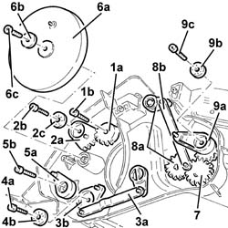
Applies to: all engines; all production periods
Join the casing halves and secure with bolts.
1. Fit the inlet and outlet pipes to heater (1a), hold collars (1b) in place with tool (1c), then tighten bolts (1d).
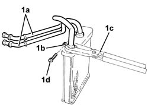
Applies to: all engines; all production periods
Refit the heater with hoses.
Place the heater protection back in its housing and secure it using the bolts.
Refit the electronic thermostat sensor control unit and secure with a rivet.
Refit the protection.
Refit the evaporator unit.
Secure the electronic thermostat to the evaporator.
Join the casing halves and secure with bolts.
Refit the external/recirculation air port with linkage.
Refit the linkage and secure with the washer and bolt.
Refit the external air intake and secure with bolts.
Join the air conditioner casing halves and secure with bolts.
Refit the bracket securing the coolant outlet and inlet lines to the radiator and secure with the bolt.
Refit the air conditioner control assembly.
Connect the air mixer flap and secure with the bolt and clip.
Connect the air distribution flap and secure with the bolt and clip.
Connect the air intake/recirculation flap cable and secure with the clip.
Refit the air conditioner fan and secure with bolts.
Place the fan motor electronic variable drive back in its housing and bolt to the upper beam.
Refit the cleaning filter element.
Refit the cleaning filter element cover and secure with bolts.
Refit the electric wiring to its seat on the air conditioner case.
Connect the electrical wiring to the electronic thermostat.
| Name | Connector |
|---|---|---|
- | Passenger compartment ventilation fan |
Connect the electrical wiring to the interior fan adjustment resistance.
| Name | Connector |
|---|---|---|
- | Passenger compartment air fan adjustment resistor | See O30 PASSENGER COMPARTMENT AIR FAN ADJUSTMENT RESISTOR ( HEATER ) |
Connect the electrical connection for the interior compartment fan.
| Name | Connector |
|---|---|---|
- | Passenger compartment ventilation fan |
Connect the electrical connectors to the controls panel.
| Name | Connector |
|---|---|---|
- | Climate control controls |
| Name | Connector |
|---|---|---|
- | Climate control fan control |
| Name | Connector |
|---|---|---|
- | Air conditioning/heater controls light |
Topics linked from this page (6)
- G45 AIR CONDITIONING/HEATER CONTROLS LIGHT
- H80 CLIMATE CONTROL CONTROLS ( AIR CONDITIONING )
- H081 CLIMATE CONTROL FAN CONTROL
- N85 PASSENGER COMPARTMENT VENTILATION FAN ( HEATER )
- N86 ELECTRONIC THERMOSTAT
- O30 PASSENGER COMPARTMENT AIR FAN ADJUSTMENT RESISTOR ( HEATER )